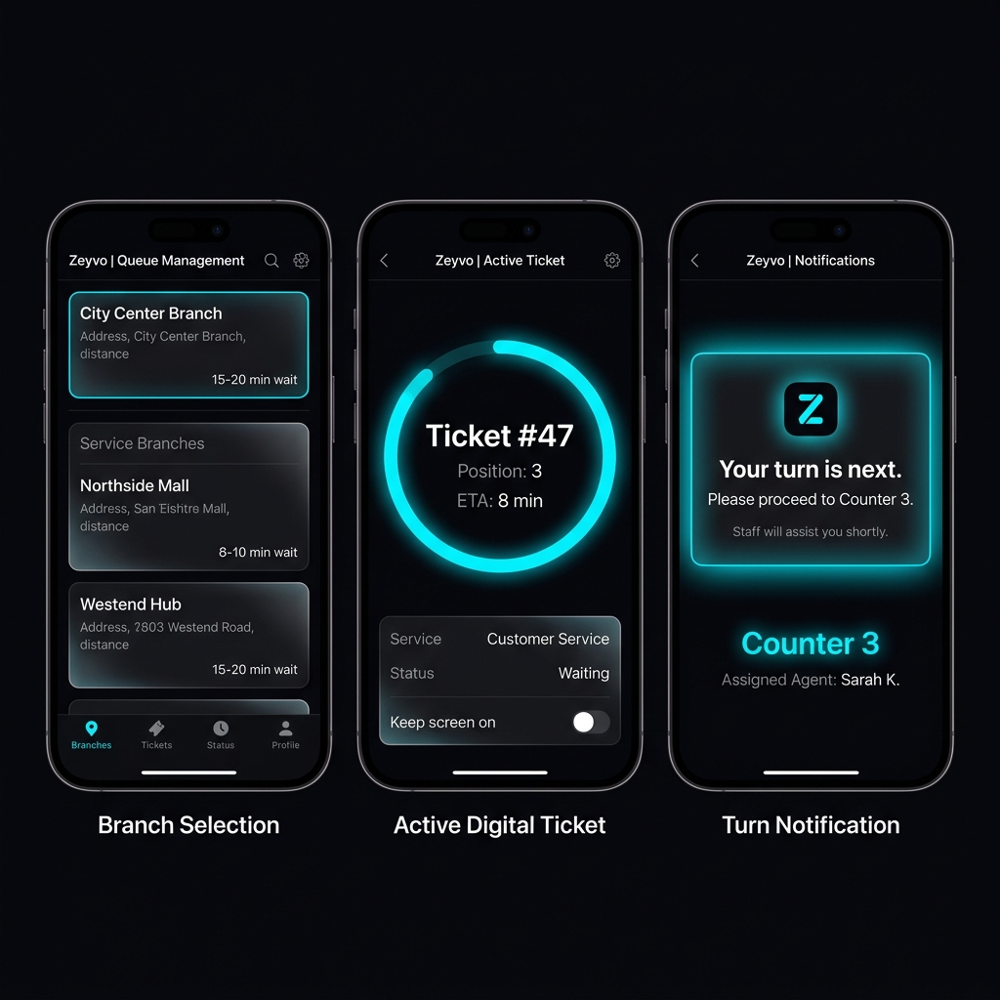
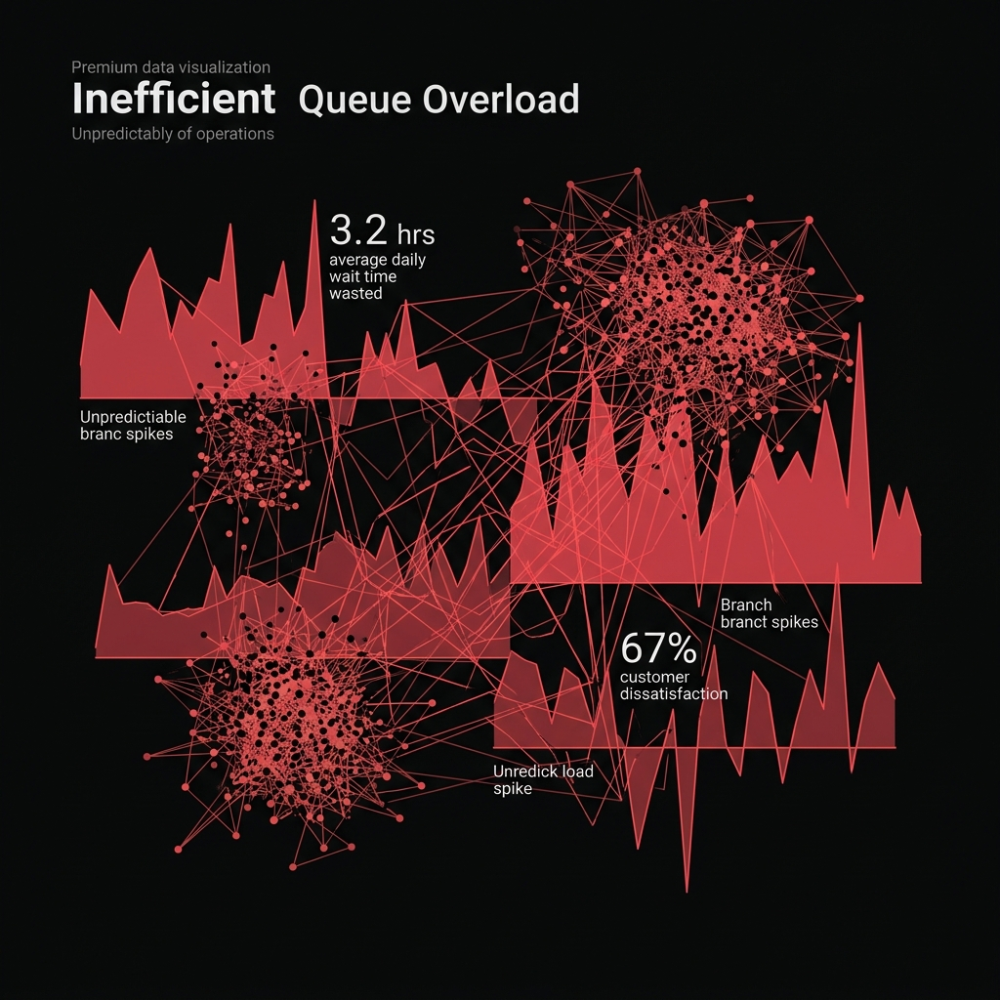
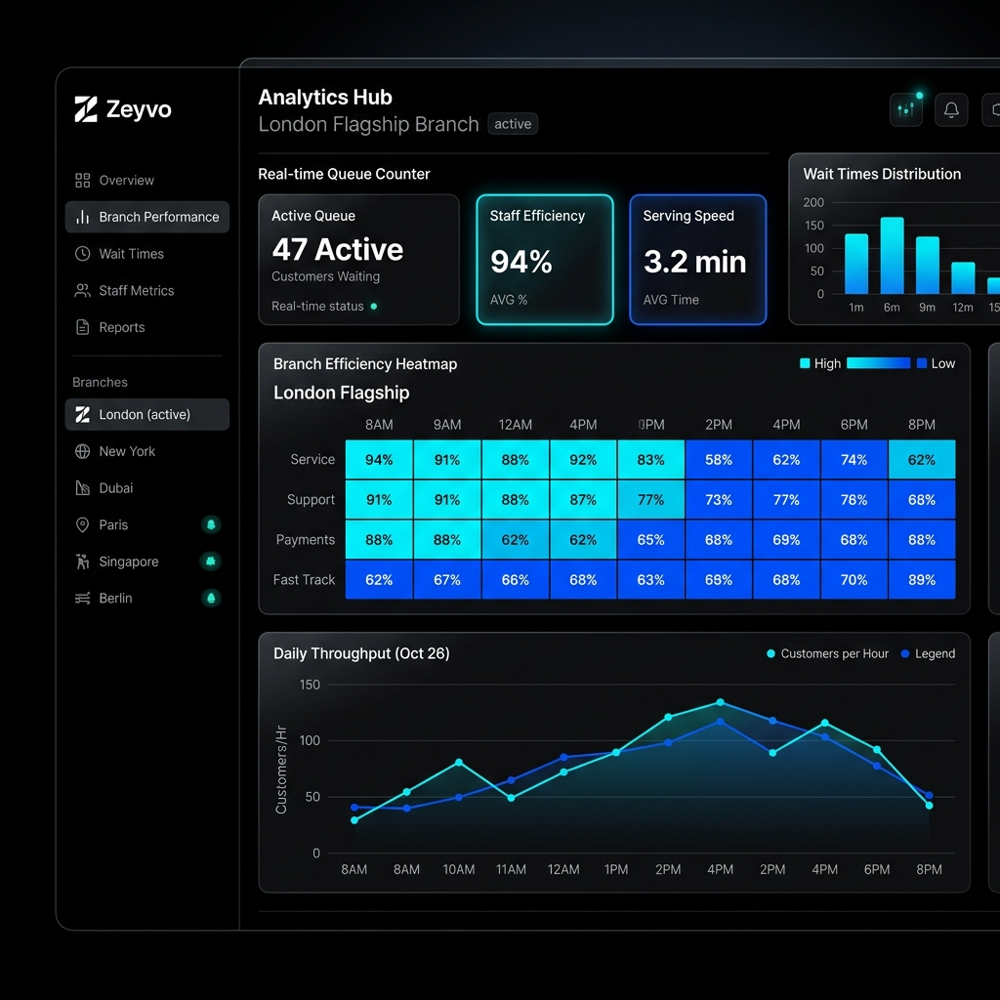

Operational Intelligence Infrastructure
ZEYVO
"Building the future of waiting."
Zeyvo is not just a digital ticket. It is an end-to-end operational intelligence platform that transforms the chaotic, unmeasurable friction of physical waiting into predictable, actionable, and seamless customer flow.

Service businesses worldwide operate with zero real-time visibility of their incoming physical load. The result: wasted human capital, customer abandonment, and operational chaos.

Zeyvo replaces operational chaos with an intelligent, automated flow system that customers love and businesses depend on.
Customers join queues from anywhere via Telegram Mini App — zero app downloads, zero friction. Select branch, pick service, receive digital ticket instantly.
Real-time WebSocket updates push millisecond-accurate queue state. Customers see their exact position and AI-predicted wait time, updated continuously.
"Leave now — your turn is in 10 minutes." Dynamic alerts calibrated to travel time ensure customers arrive precisely when needed.
AI-driven queue optimization balances load across counters, predicts overload, and recommends branch redistribution before bottlenecks form.
Enterprise dashboards deliver branch efficiency heatmaps, throughput metrics, staff performance, and historical forecasting for strategic planning.
Manage multiple branches, track staff efficiency in real-time, monitor queue throughput, and identify bottlenecks before they occur.

No apps to download. Customers interface through Telegram — a platform they already use daily. Premium, instant experience from discovery to service.
Zeyvo utilizes predictive ETA modeling — not simple averages. Real-time service times, impending overload predictions, and smart-balancing recommendations. True operational intelligence, grounded in mathematics.
Historical throughput analysis combined with real-time service duration tracking generates accurate wait-time predictions that update every second.
Pattern recognition identifies peak-hour surges before they happen, enabling proactive staff allocation and customer flow redistribution.
Cross-branch load optimization recommends which location customers should visit, reducing system-wide wait times by distributing demand intelligently.
Long-term operational forecasting provides staffing recommendations, capacity planning insights, and seasonal demand predictions.
Any business where people physically wait can benefit from Zeyvo's operational intelligence layer.
Enterprise-grade architecture designed for real-time performance, horizontal scalability, and absolute data integrity.
Long-term vision: Operational intelligence infrastructure for every service business on earth.